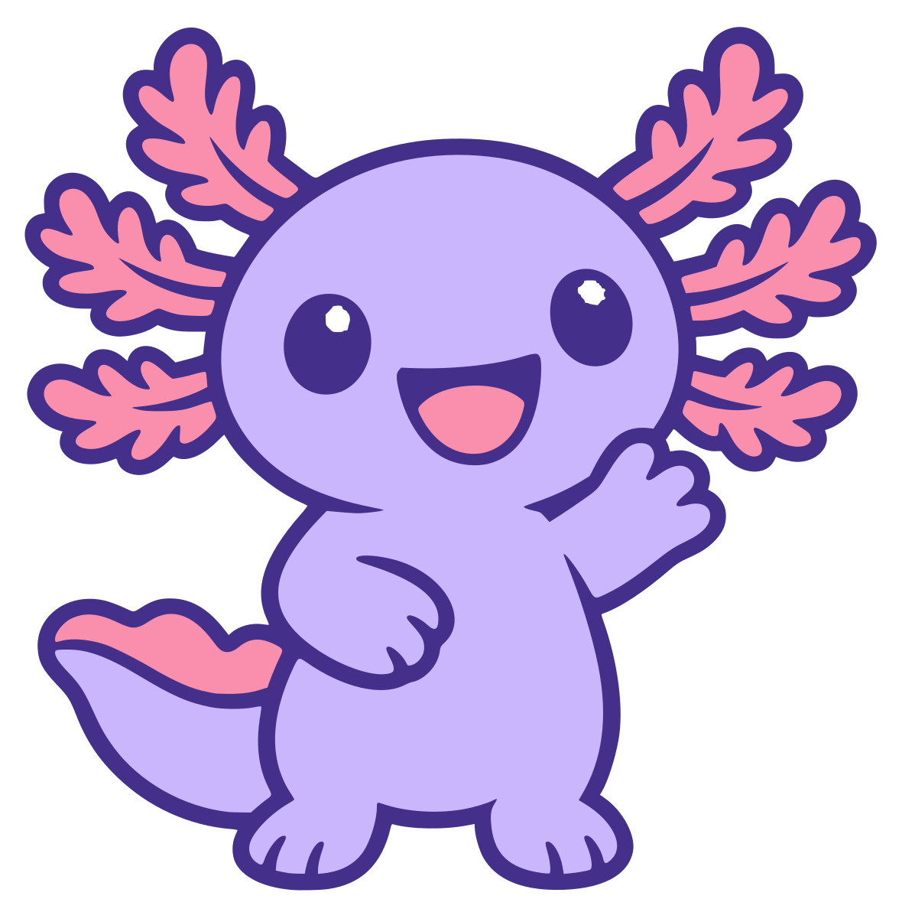
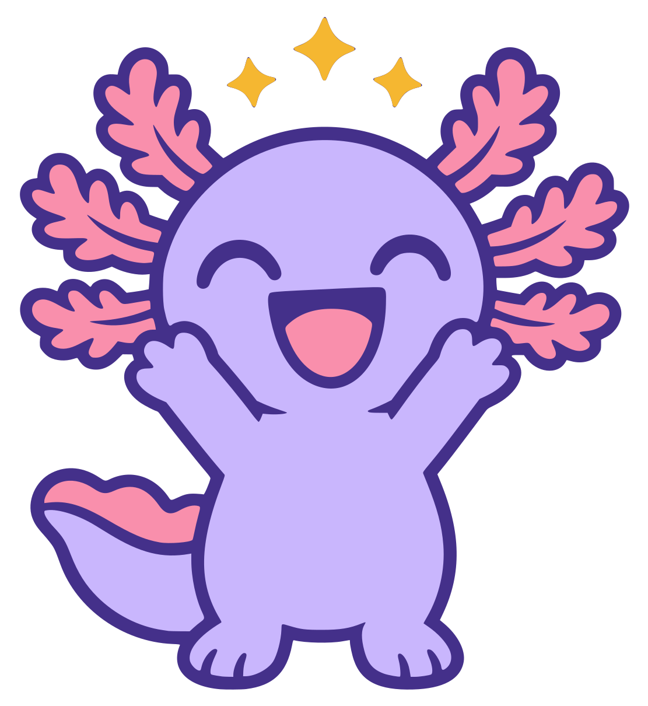

<!doctype html>
<html lang="en">
<meta charset="utf-8">
<title>Axiko promo</title>
<!--
  The promo video as a page. Nothing here runs in real time: every motion is a paused
  Web Animation, and window.seek(seconds) puts the whole page at that moment, so
  render.mjs can take the frames one by one and they always come out the same.
  The screens in the phones are stills of the real app (stills/, listed in stills/stills.js).
-->
<style>
  :root {
    --bg: #0B0B0F;
    --ink: #F1F1F4;
    --ink-2: #A9A9B6;
    --line: #2C2C36;
    --accent: #8B7CFF;
  }

  html, body {
    margin: 0;
    background: var(--bg);
  }

  #stage {
    position: relative;
    width: 1280px;
    height: 720px;
    overflow: hidden;
    background: var(--bg);
    color: var(--ink);
    font-family: "Segoe UI Variable Display", "Segoe UI", system-ui, sans-serif;
  }

  .glow {
    position: absolute;
    left: 560px;
    top: -260px;
    width: 1100px;
    height: 1100px;
    border-radius: 50%;
    opacity: 0;
  }

  .center {
    position: absolute;
    left: 0;
    top: 0;
    width: 1280px;
    height: 720px;
    display: flex;
    flex-direction: column;
    align-items: center;
    justify-content: center;
    text-align: center;
    opacity: 0;
  }

  .center img {
    width: 230px;
    height: 230px;
  }

  .wordmark {
    margin-top: 14px;
    font-size: 96px;
    font-weight: 800;
    letter-spacing: -0.03em;
    line-height: 1;
  }

  .tagline {
    margin-top: 18px;
    font-size: 30px;
    color: var(--ink-2);
  }

  .tagline b {
    color: var(--accent);
    font-weight: 700;
  }

  .cap {
    position: absolute;
    left: 96px;
    top: 0;
    width: 640px;
    height: 720px;
    display: flex;
    flex-direction: column;
    justify-content: center;
    opacity: 0;
  }

  .cap .label {
    font-size: 17px;
    font-weight: 700;
    letter-spacing: 0.16em;
    text-transform: uppercase;
    color: var(--accent);
  }

  .cap .head {
    margin-top: 16px;
    font-size: 68px;
    font-weight: 750;
    letter-spacing: -0.025em;
    line-height: 1.04;
  }

  .cap .sub {
    margin-top: 20px;
    font-size: 26px;
    line-height: 1.35;
    color: var(--ink-2);
  }

  .said {
    margin-top: 26px;
    align-self: flex-start;
    padding: 16px 22px;
    border-radius: 22px 22px 22px 6px;
    background: #1B1B24;
    font-size: 26px;
    opacity: 0;
  }

  .say {
    width: fit-content;
    white-space: nowrap;
    margin-top: 30px;
    padding: 14px 22px;
    border-radius: 22px 22px 6px 22px;
    background: var(--accent);
    color: #14121F;
    font-size: 25px;
    font-weight: 650;
    opacity: 0;
  }

  .say span {
    opacity: 0;
    font-size: 0;
  }

  .steps {
    margin-top: 28px;
    display: flex;
    flex-direction: column;
    gap: 14px;
  }

  .step {
    display: flex;
    align-items: center;
    gap: 14px;
    font-size: 26px;
    color: var(--ink-2);
    opacity: 0;
  }

  .step i {
    width: 26px;
    height: 26px;
    border-radius: 50%;
    background: var(--accent);
    display: grid;
    place-items: center;
  }

  .step i::after {
    content: "";
    width: 10px;
    height: 5px;
    border-left: 3px solid #0B0B0F;
    border-bottom: 3px solid #0B0B0F;
    transform: translateY(-1px) rotate(-45deg);
  }

  .words {
    position: relative;
    margin-top: 16px;
    height: 76px;
  }

  .words .head {
    position: absolute;
    left: 0;
    top: 0;
    margin: 0;
    opacity: 0;
    white-space: nowrap;
  }

  .dots {
    margin-top: 30px;
    display: flex;
    gap: 14px;
  }

  .dots span {
    width: 22px;
    height: 22px;
    border-radius: 50%;
    opacity: 0.35;
  }

  .phone {
    position: absolute;
    left: 868px;
    top: 30px;
    width: 290px;
    height: 644px;
    padding: 8px;
    border-radius: 42px;
    background: #000;
    outline: 1.5px solid #3A3A46;
    opacity: 0;
  }

  .screen {
    position: relative;
    width: 290px;
    height: 644px;
    border-radius: 34px;
    overflow: hidden;
    background: #101010;
  }

  .screen img {
    position: absolute;
    left: 0;
    top: 0;
    width: 290px;
    height: 644px;
    opacity: 0;
  }

  .who {
    position: absolute;
    top: 672px;
    width: 306px;
    text-align: center;
    font-size: 24px;
    font-weight: 650;
    color: var(--ink-2);
    opacity: 0;
  }

  .top {
    position: absolute;
    left: 0;
    top: 34px;
    width: 1280px;
    text-align: center;
    font-size: 52px;
    font-weight: 750;
    letter-spacing: -0.025em;
    opacity: 0;
  }

  .top b {
    color: var(--accent);
    font-weight: 750;
  }
</style>
<body>
<div id="stage"></div>
<script src="stills/stills.js"></script>
<script>
  const THEMES = [
    ['default', '#8B7CFF', 'Violet'],
    ['emerald', '#3DDC97', 'Emerald'],
    ['ocean', '#4DA3FF', 'Ocean'],
    ['rose', '#FF6F91', 'Rose'],
    ['amber', '#F5B341', 'Amber'],
  ];
  const stage = document.getElementById('stage');
  const anims = [];
  const EASE = 'cubic-bezier(.2,.8,.2,1)';
  const POP = 'cubic-bezier(.3,1.5,.5,1)';

  function el(tag, cls, html, parent) {
    const node = document.createElement(tag);
    if (cls) node.className = cls;
    if (html) node.innerHTML = html;
    (parent || stage).append(node);
    return node;
  }

  /** One paused animation; it holds its last frame and does nothing before its start. */
  function A(node, frames, start, dur, easing) {
    const a = node.animate(frames, { delay: start * 1000, duration: Math.max(dur, 0.001) * 1000, fill: 'forwards', easing: easing || EASE });
    a.pause();
    anims.push(a);
  }

  function fadeIn(node, at, dur) {
    A(node, { opacity: [0, 1], translate: ['0 26px', '0 0'] }, at, dur || 0.5);
  }

  function fadeOut(node, at, dur) {
    A(node, { opacity: [1, 0], translate: ['0 0', '0 -18px'] }, at, dur || 0.3, 'ease-in');
  }

  function caption(label, head, sub) {
    return el('div', 'cap', '<div class="label">' + label + '</div><div class="head">' + head + '</div>' + (sub ? '<div class="sub">' + sub + '</div>' : ''));
  }

  function phone(left) {
    const p = el('div', 'phone');
    if (left !== undefined) p.style.left = left + 'px';
    p.screen = el('div', 'screen', '', p);
    return p;
  }

  /** Puts a still on a phone's screen from a moment on; later stills lie over earlier ones. */
  function show(p, name, at, fade) {
    const img = el('img', '', '', p.screen);
    img.src = 'stills/' + name + '.png';
    A(img, { opacity: [0, 1] }, at, fade === undefined ? 0.25 : fade, 'linear');
    return img;
  }

  async function build() {
    const list = window.STILLS.map(s => s.name);
    const has = name => list.includes(name);
    const group = prefix => list.filter(n => n.startsWith(prefix)).sort();

    const glows = THEMES.map(([, color]) => {
      const g = el('div', 'glow');
      g.style.background = 'radial-gradient(closest-side, ' + color + '33, ' + color + '00)';
      return g;
    });
    A(glows[0], { opacity: [0, 1] }, 0, 1.2, 'linear');

    // ---- 1. Hello ---------------------------------------------------------------------------
    let t = 0;
    const intro = el('div', 'center', '<div class="wordmark">Axiko</div><div class="tagline">The app that <b>rebuilds itself</b> around you.</div>');
    const [face, mark, line] = intro.children;
    A(intro, { opacity: [0, 1] }, 0.1, 0.2, 'linear');
    A(face, { scale: [0.5, 1], opacity: [0, 1] }, 0.15, 0.7, POP);
    A(mark, { opacity: [0, 1], translate: ['0 30px', '0 0'] }, 0.55, 0.55);
    A(line, { opacity: [0, 1], translate: ['0 24px', '0 0'] }, 0.95, 0.55);
    for (const node of [mark, line]) node.style.opacity = 0;
    face.style.opacity = 0;
    A(intro, { opacity: [1, 0], scale: [1, 0.96] }, 3.0, 0.35, 'ease-in');
    t = 3.4;

    // ---- 2. Ask, and it grows a screen ------------------------------------------------------
    const p = phone();
    A(p, { opacity: [0, 1], translate: ['0 90px', '0 0'] }, t, 0.8);
    show(p, 'a-home-plain', t, 0);
    const c1 = caption('Day one', 'It starts plain.', 'A home screen, a chat and a small axolotl.');
    fadeIn(c1, t + 0.3);
    t += 2.4;
    fadeOut(c1, t - 0.35);

    const typing = group('b-type-');
    const c2 = caption('Ask', 'Tell it what<br>you need.', 'In your own words. Text or voice.');
    fadeIn(c2, t);
    if (has('b-chat-empty')) show(p, 'b-chat-empty', t);
    t += 0.7;
    typing.forEach((name, i) => show(p, name, t + i * 0.2, 0));
    // The same request, large enough to read: it grows in step with the typing in the phone.
    const request = 'Make a habit tracker with daily marks';
    const say = el('div', 'say', '', c2);
    A(say, { opacity: [0, 1] }, t - 0.1, 0.15, 'linear');
    typing.forEach((name, i) => {
      const part = el('span', '', '', say);
      part.textContent = request.slice(Math.round(request.length * i / typing.length), Math.round(request.length * (i + 1) / typing.length));
      A(part, { opacity: [0, 1], fontSize: ['0px', '25px'] }, t + i * 0.2, 0.001, 'linear');
    });
    t += typing.length * 0.2 + 0.5;
    fadeOut(c2, t - 0.3);

    const work = group('c-work-');
    const per = Math.min(0.5, 4.6 / Math.max(1, work.length));
    const c3 = caption('It builds', 'It writes the<br>screen itself.');
    const steps = el('div', 'steps', '', c3);
    const names = ['The logic', 'The screen', 'A card for Home', 'Checked on the phone'];
    fadeIn(c3, t);
    work.forEach((name, i) => show(p, name, t + i * per, 0));
    const span = work.length * per;
    names.forEach((text, i) => {
      const row = el('div', 'step', '<i></i>' + text, steps);
      A(row, { opacity: [0, 1], translate: ['-16px 0', '0 0'] }, t + 0.5 + i * (span - 0.6) / names.length, 0.35);
    });
    t += span;
    if (has('d-answer')) show(p, 'd-answer', t);
    t += 1.3;
    fadeOut(c3, t - 0.3);

    const c4 = caption('Done', 'A new screen<br>is on Home.', 'No update. No store. It just grew.');
    fadeIn(c4, t);
    show(p, 'e-home-habits', t, 0.35);
    A(p, { scale: [1, 1.035, 1] }, t, 0.6, 'ease-out');
    t += 2.0;
    if (has('f-habits')) show(p, 'f-habits', t, 0.3);
    t += 1.7;
    fadeOut(c4, t - 0.3);

    if (has('j-reading') && has('g-theme-default')) {
      const more = caption('Keep asking', 'It keeps<br>growing.', 'Reading, runs, games: each one a sentence away.');
      fadeIn(more, t);
      show(p, 'j-reading', t, 0.3);
      t += 1.3;
      show(p, 'g-theme-default', t, 0.35);
      t += 1.2;
      fadeOut(more, t - 0.3);
    }

    // ---- 3. Make it yours -------------------------------------------------------------------
    const c5 = el('div', 'cap', '<div class="label">Make it yours</div><div class="words"></div><div class="sub">Colors, type, shapes, layout, menu, mascot: ask, or change them yourself.</div><div class="dots"></div>');
    const words = c5.querySelector('.words');
    const dots = c5.querySelector('.dots');
    fadeIn(c5, t);
    const word = (text, from, to) => {
      const w = el('div', 'head', text, words);
      A(w, { opacity: [0, 1], translate: ['0 30px', '0 0'] }, from, 0.35);
      if (to) A(w, { opacity: [1, 0], translate: ['0 0', '0 -30px'] }, to - 0.25, 0.25, 'ease-in');
    };
    t += 0.3;
    const themed = THEMES.filter(([id]) => has('g-theme-' + id));
    const each = 0.5;
    if (themed.length) word('Your colors.', t, t + themed.length * each);
    themed.forEach(([id, color], i) => {
      const at = t + i * each;
      show(p, 'g-theme-' + id, at, 0.18);
      const dot = el('span', '', '', dots);
      dot.style.background = color;
      A(dot, { opacity: [0.35, 1], scale: [1, 1.45] }, at, 0.2);
      A(dot, { opacity: [1, 0.35], scale: [1.45, 1] }, at + each, 0.2);
      if (i) {
        A(glows[THEMES.findIndex(x => x[0] === id)], { opacity: [0, 1] }, at, 0.3, 'linear');
        A(glows[THEMES.findIndex(x => x[0] === themed[i - 1][0])], { opacity: [1, 0] }, at, 0.3, 'linear');
      }
    });
    t += themed.length * each;
    const last = themed.length ? THEMES.findIndex(x => x[0] === themed[themed.length - 1][0]) : 0;
    if (last) {
      A(glows[last], { opacity: [1, 0] }, t, 0.3, 'linear');
      A(glows[0], { opacity: [0, 1] }, t, 0.3, 'linear');
    }
    // One trait at a time, each on the same Home; a trait with no stills is left out.
    const traits = [
      ['Your layout.', ['h-layout-c', 'h-layout-b', 'h-layout-a']],
      ['Your type.', ['m-font-serif', 'm-font-mono', 'm-font-condensed']],
      ['Your shapes.', ['m-shape-sharp', 'm-shape-round', 'm-shape-outline']],
      ['Your mascot.', ['n-mascot-mint', 'n-mascot-sun', 'i-button-badge', 'n-mascot-off']],
      ['Your menu.', ['n-nav-short', 'n-nav-off']],
    ].map(([text, names]) => [text, names.filter(has)]).filter(([, names]) => names.length);
    const turn = 0.5;
    traits.forEach(([text, names], i) => {
      word(text, t, i < traits.length - 1 ? t + names.length * turn : 0);
      names.forEach((name, k) => show(p, name, t + k * turn, 0.18));
      t += names.length * turn;
    });
    t += 0.4;
    fadeOut(c5, t - 0.3);

    // ---- 4. No two alike --------------------------------------------------------------------
    const people = [['p-reader', 'A reader'], ['p-runner', 'A runner'], ['p-tinkerer', 'A tinkerer'], ['p-kid', 'A kid'], ['p-minimal', 'A minimalist']].filter(([name]) => has(name));
    if (people.length >= 3) {
      const top = el('div', 'top', 'One app. <b>No two alike.</b>');
      fadeIn(top, t + 0.2);
      // The phones stand in a row, as large as the row allows; a phone's box is 306 by 660.
      const n = people.length;
      const S = Math.min(0.8, (1280 - 60 - (n - 1) * 34) / (n * 306));
      const stride = 306 * S + 34;
      const lefts = people.map((_, i) => 640 + (i - (n - 1) / 2) * stride - 153);
      const down = 648 - 360 - 330 * S;
      const mid = Math.floor(n / 2);
      // The phone from before becomes the middle one.
      show(p, people[mid][0], t, 0.4);
      A(p, { translate: ['0 0', (lefts[mid] - 868) + 'px ' + down + 'px'], scale: [1, S] }, t, 0.8);
      const row = people.map(([name], i) => {
        if (i === mid) return p;
        const side = phone(lefts[i]);
        show(side, name, 0, 0);
        const from = (i < mid ? -220 : 220) + 'px ' + down + 'px';
        A(side, { opacity: [0, 1], translate: [from, '0 ' + down + 'px'], scale: [S, S] }, t + 0.25 + Math.abs(i - mid) * 0.14, 0.8);
        side.style.scale = S;
        return side;
      });
      const tags = people.map(([, text], i) => {
        const tag = el('div', 'who', text);
        tag.style.left = lefts[i] + 'px';
        tag.style.top = '660px';
        if (n > 3) tag.style.fontSize = '21px';
        A(tag, { opacity: [0, 1], translate: ['0 14px', '0 0'] }, t + 1.0 + i * 0.12, 0.4);
        return tag;
      });
      // Each one opens its own screen in turn, then they all come back Home.
      people.forEach(([name], i) => {
        if (!has(name + '-screen')) return;
        show(row[i], name + '-screen', t + 2.3 + i * 0.3, 0.3);
        show(row[i], name, t + 4.6 + i * 0.1, 0.3);
      });
      t += 6.2;
      for (const node of [top, ...row, ...tags]) A(node, { opacity: [1, 0] }, t - 0.35, 0.35, 'ease-in');
    } else {
      A(p, { opacity: [1, 0] }, t, 0.35, 'ease-in');
      t += 0.4;
    }

    // ---- 5. The end -------------------------------------------------------------------------
    const end = el('div', 'center', '<div class="wordmark">Axiko</div><div class="tagline">Your phone, <b>rebuilt around you.</b></div>');
    A(end, { opacity: [0, 1] }, t, 0.3, 'linear');
    A(end.children[0], { scale: [0.5, 1] }, t, 0.7, POP);
    A(end.children[1], { opacity: [0, 1], translate: ['0 30px', '0 0'] }, t + 0.3, 0.5);
    A(end.children[2], { opacity: [0, 1], translate: ['0 24px', '0 0'] }, t + 0.6, 0.5);
    end.children[1].style.opacity = 0;
    end.children[2].style.opacity = 0;
    t += 3.4;

    await Promise.all([...document.images].map(img => img.decode().catch(() => {})));
    window.total = t;
    window.seek = seconds => { for (const a of anims) a.currentTime = seconds * 1000; };
    window.seek(0);
    window.ready = true;
    // Opened by hand: plays in real time; ?t=12.5 shows one moment.
    const want = new URLSearchParams(location.search).get('t');
    if (want !== null) window.seek(+want);
    else if (!navigator.webdriver && !new URLSearchParams(location.search).has('still')) {
      const began = performance.now();
      const tick = () => { window.seek(((performance.now() - began) / 1000) % t); requestAnimationFrame(tick); };
      tick();
    }
  }
  build();
</script>
</body>
</html>
